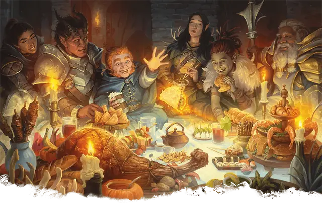

Пир героев
Heroes' Feast
6 уровень, Вызов

Время сотворения 10 минут
Дистанция 30 футов
Компоненты В, С, М (инкрустированная драгоценными камнями чаша, стоящая как минимум 1000 зм, расходуемая заклинанием)
Длительность Мгновенная
Классы Бард, Друид, Жрец
Вы организовываете шикарный пир, включая великолепные пищу и питьё. Пир совершается в течение 1 часа, и исчезает по прошествии этого времени, но положительные эффекты не вступают в силу, пока этот час не пройдёт. В пире могут принимать участие до двенадцати существ.
Существо, принявшее участие в пиршестве, получает несколько преимуществ. Оно излечивается от всех болезней и ядов, приобретает иммунитет к ядам и состоянию испуга, совершает спасброски Мудрости с преимуществом. Максимум его хитов увеличивается на 2к10, и оно получает такое же количество хитов. Все эти преимущества длятся 24 часа.